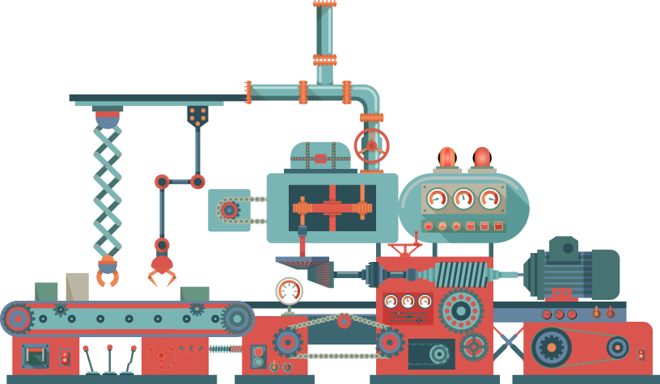

O mundo passou por verdadeiras transformações em muitos sentidos no decorrer dos séculos. Nos âmbitos econômico, político e social, as revoluções no campo industrial foram marcantes, tendo seu início com a manufatura artesanal, chegando ao que se vive hoje, denominado como Quarta Revolução Industrial ou Indústria 4.0 (Quintino, et al., 2019).
Neste momento você pode estar se perguntando: por que eu preciso conhecer as mudanças da indústria nesta unidade curricular? O que esse conhecimento pode agregar na minha formação? A resposta é simples: a indústria é o meio que gera tudo que você consome, usa ou especifica. Por essa razão, entender os processos fabris e como a tecnologia chegou ao que se tem hoje lhe possibilitará fazer escolhas mais conscientes dos produtos e serviços que utiliza em seus projetos.
Então, conheça um pouquinho da história para compreender como a indústria cresceu ao longo dos anos.
Você já parou para pensar em como os produtos são fabricados?
Os processos, os métodos, as máquinas e o perfil dos profissionais vêm sofrendo uma constante e significativa mudança.
Atualmente, a maioria dos produtos que consumimos vem de indústrias e é fabricada em escala. Mas nem sempre foi assim.
Até o final do século 18, produtos como roupas, utensílios domésticos, calçados, alimentos e até remédios eram fabricados por artesãos.
O processo era rudimentar e feito com ferramentas muito simples.
O artesão costumava herdar o ofício da família, ou seja, aprendia o conhecimento técnico com os seus antepassados, e tinha muita prática na fabricação dos produtos.
Conheça as principais características do período de manufatura artesanal:
Embora muitos artesãos produzissem para consumo próprio, alguns comercializavam os produtos.
Foi então que os empresários, vendo o trabalho dos artesãos, começaram a construir as oficinas.
Essas oficinas eram chamadas de manufatura.
Nelas, os artesãos trabalhavam para o dono daquele espaço em troca de uma remuneração mensal.
Eles eram obrigados a produzir em turnos que chegavam a 16 horas de trabalho.
Isso tudo sem nenhum direito trabalhista, como férias e descanso semanal remunerado. Foi assim o início do surgimento das fábricas.
Iniciada no final do século 18, esse período foi marcado pelo surgimento da indústria e do capitalismo. Aqui tivemos a transição para novos processos de fabricação na Grã-Bretanha, na Europa Continental e nos Estados Unidos.
Por volta de 1750, os processos antigos foram substituídos por máquinas.
Em 1765, foi criada a primeira máquina a vapor, pelo engenheiro britânico James Watt (UÁT).
O equipamento marcou o início da tecelagem em âmbito industrial, na Inglaterra.
A partir disso, os produtos tornaram-se acessíveis para pessoas de menor classe social.
Outro ponto é que cada trabalhador passou a produzir somente uma parte do produto, conforme o conceito de manufatura em linha de produção.
A Primeira Revolução Industrial durou 201 anos e seu período foi de 1712 até 1913. Suas principais características eram:
Em 1914, Henry Ford criou a linha de produção em massa.
O fordismo é um modelo de produção industrial e surgiu nos Estados Unidos.
O fordismo reduziu o tempo de produção e o custo dos veículos.
O sistema foi um marco no mercado automobilístico da época, pois até aquele momento os carros eram construídos artesanalmente.
Os objetivos eram:
Já como características do sistema estão:
Também foi nesse período que surgiu a energia elétrica, fator que deu origem à esteira rolante e proporcionou um ritmo de produção dinâmico e estável.
As principais características da Segunda Revolução Industrial foram:
Esse período também ficou conhecido como a era da automação. Iniciou na metade do século 20, após a Segunda Guerra Mundial, e durou até 2010.
Aqui tivemos um grande avanço tecnológico com a implantação de:
Em 1950, surgiu no Japão um novo modelo produtivo.
O toyotismo é um modelo de produção caracterizado por produzir conforme a demanda de mercado.
Ficou conhecido como produção enxuta, do inglês lean manufacturing.
Desenvolvido pela Toyota Motor Corporation, o modelo foi influenciado pelas ideias do estatístico americano William Edwards Dêming e pelos ensinamentos do fundador da Toyota, SSAKÍTI TOYÓDA.
É um sistema de produção enxuto, que tem como objetivo aumentar a eficiência e a produtividade.
São características do toyotismo:
O avanço tecnológico, com máquinas mais eficientes e utilização de robôs, proporcionou mais produtividade e aumento dos lucros.
As principais características da Terceira Revolução Industrial foram:
Em 2012, na Alemanha, surge a Indústria 4.0, a era da interação digital.
Nesse período, tivemos um salto de produtividade, uma redução de custos e um aumento na integração entre o físico e o virtual.
A Indústria 4.0 apoia-se sobre nove pilares tecnológicos. Conheça quais são eles.
O big data é a área do conhecimento que busca maneiras de tratar, analisar e gerar conhecimento por meio de grandes conjuntos de dados.
A robótica autônoma trabalha com algoritmos de inteligência artificial, podendo tomar decisões e compartilhar experiências com outros equipamentos.
A simulação computacional consiste em programas que simulam comportamentos de produtos e processos.
A internet das coisas realiza a interconexão de objetos por meio da internet.
A cibersegurança é o conjunto de técnicas e tecnologias que buscam prevenir e combater ameaças cibernéticas.
A integração de sistemas integra fabricantes, fornecedores, distribuidores e clientes.
A computação na nuvem se refere a servidores e computadores hospedados em data centers e interligados por meio da internet.
A impressão 3D se refere a equipamentos de prototipagem rápida, com tecnologia CNC, conhecida como controle numérico computadorizado.
A realidade aumentada se refere à tecnologia que integra um conteúdo virtual dentro de um cenário real com base em câmeras.
Busque exemplos dos pilares da Indústria 4.0 e veja quanto eles já fazem parte da sua vida!
Bons estudos e até mais!
Neste conhecimento, você aprendeu como os processos fabris e a tecnologia moldaram o ambiente em que se vive. A indústria desempenha um papel importante na criação de móveis, acabamentos e elementos que integram os espaços projetados. Conhecendo essa trajetória, você será capaz de tomar decisões mais informadas na seleção de materiais, de mobiliário e de tecnologias para seus projetos de design de interiores.
